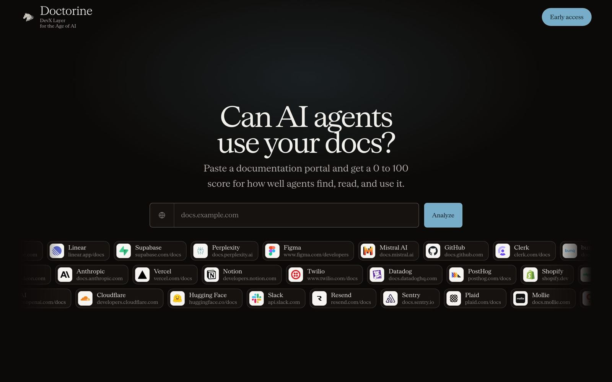
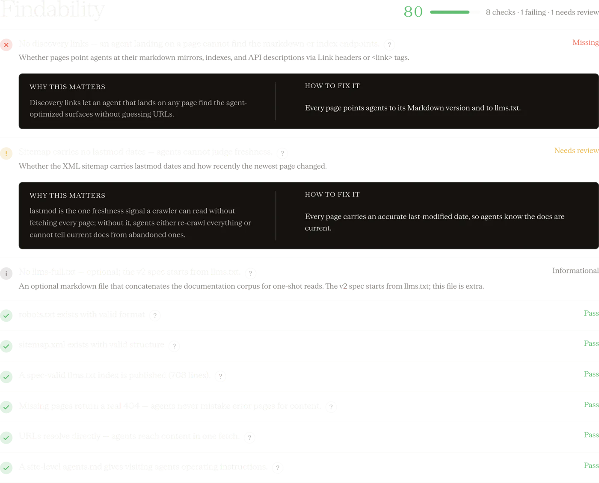

Docs Analyser: can AI agents find, read and use your docs?
A free check at doctorine.dev. Paste a documentation portal and get a score from 0 to 100 for how well agents find, read and use it, with every signal that passed, failed or needs review.

A score, five categories and every check behind them.
Each check says passed, failed, needs review or unverified, so you know exactly which file or header to add.
Five categories agents care about.
The result combines the Cloudflare Agent Ready benchmark signals with Doctorine's own probes.

Readable is not the same as usable.
A portal can pass every static check and still lose an agent halfway through a refund. The analyser tells you whether agents can find and read your docs. The agent task eval tells you whether they can finish the job.
Questions
Is the Docs Analyser free?
Yes. Paste any public documentation portal at doctorine.dev and get the score and the checklist.
What does an incomplete scan mean?
When too many signals cannot be verified, the analyser withholds a score instead of guessing. In our September run this happened on 17 of 33 portals, most often when probes for the machine-readable spec and MCP endpoint were limited or unavailable.
Where do the checks come from?
The result combines the Cloudflare Agent Ready benchmark signals with Doctorine's own probes, grouped into five categories.
Does a high score mean agents can use our API?
Not on its own. A high score means agents can find and read your docs. Whether they can complete a task is what the agent task eval measures.
Ship the change. Keep the proof.
Send us your public docs and spec, and we will show you which real tasks agents can finish with your API today. The report is free and reads only what you already publish.